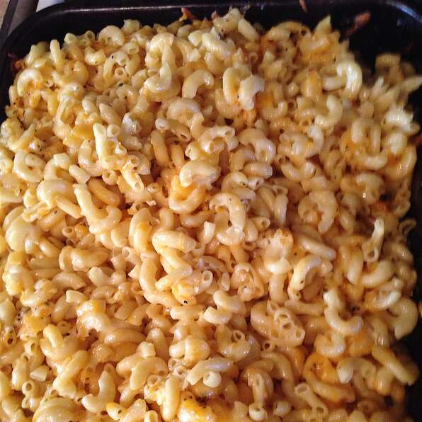

Baked Macaroni Recipe

Description
Prep:
15 mins
Cook:
30 mins
Total:
45 mins
Servings:
8
Yield:
8 servings
Ingredients
- 1 (16 ounce) package Macaroni
- 2 eggs
- ¼ cup milk
- ground black pepper to taste
- 1 (16 ounce) package sharp Cheddar cheese, shredded
- 2 tablespoons butter, sliced
Steps
- Step 1
Preheat oven to 350 degrees F (175 degrees C).
- Step 2
Bring a large pot of lightly salted water to a boil. Add macaroni and cook for 10 to 13 minutes or until
al dente; drain.
- Step 3
In a bowl mix together the eggs, milk, and pepper. In a casserole dish, place about a third of the
cooked macaroni in one layer, sprinkle with 1/2 of the cheese, then layer the rest of the macaroni and
cover with the remaining cheese. Coat evenly with the egg-milk mixture. Lastly, cut slices of butter and
place them on top of the cheese.
- Step 4
Bake in preheated oven for 30 minutes, or until cheese is melted and bubbly.